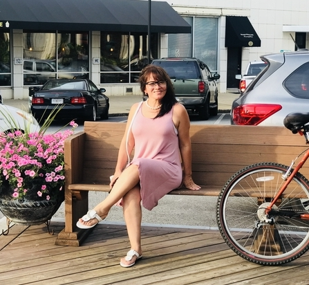
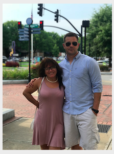

All About The Office Deli
For years, Mom had always made sure her children ate healthy and that they were well taken care of. When her children grew up and left home, she noticed a little change in the tummy size of her children. Worried about this situation, Mom decided to move into the city and make sure her children were well fed with the best nutriments and the highest quality of food. Her children then got healthy and they got back in track with their healthy figure while they got to enjoy the companionship of their mom.
However, the story truly began when her children started to bring friends over to also try the deliciousness of the food of their mom.
A few months later, it was a tradition to have a family Sunday at her house, where the family was growing more and more, as more friends arrived making Mom very popular. Since the number of people became larger over time, her children decided to save up some money, and give her her very own business, where she could deliver her secret recipes to anyone in the city of Charlotte.
On her birthday, her children covered her eyes, and drove her to uptown Charlotte, where she received the best birthday surprise she could have ever imagined. This business is family owned and every customer is treated with love and respect, just the way any mom would.
Big crowds have always followed Mom around, where only having food wasn't enough. Mom decided to give a fun weekend environment and host events such as weddings, corporate parties, etc.
